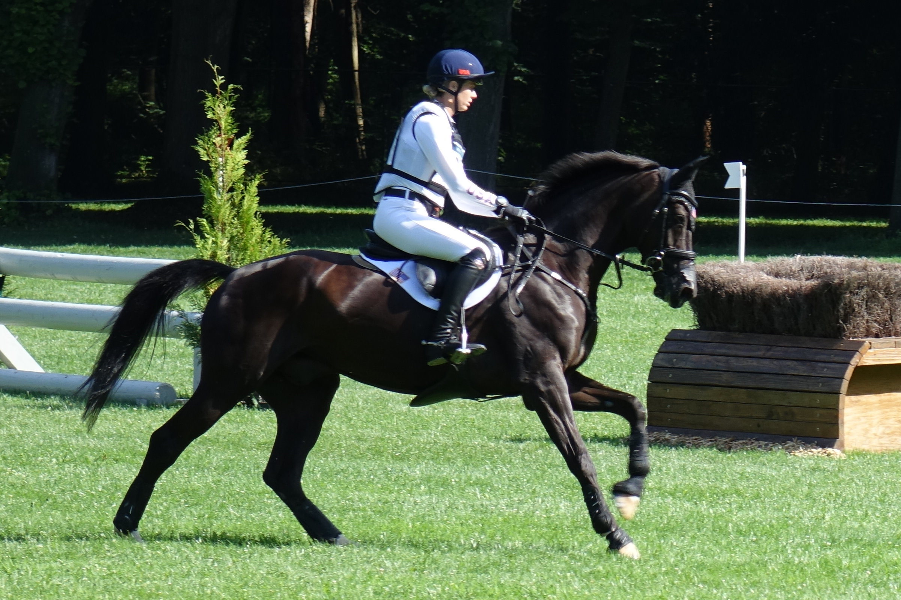

Caroline Pamukcu firma el doblete en el CCI4*-L de Bromont con HSH Double Sixteen
La amazona estadounidense Caroline Pamukcu se proclamó este domingo vencedora del CCI4*-L del MARS Bromont CCI, en Quebec, con HSH Double Sixteen, en una jornada redonda que se completó además con la segunda plaza para su otro caballo de cabecera.

Uso editorial
La amazona estadounidense Caroline Pamukcu se proclamó este domingo vencedora del CCI4*-L del MARS Bromont CCI, en Quebec, con HSH Double Sixteen, en una jornada redonda que se completó además con la segunda plaza para su otro caballo de cabecera.
Pamukcu cerró las tres fases del completo con un total de 47,5 puntos de penalización a pesar de derribar dos barras en el salto final, suficiente para mantener el liderazgo que había heredado el sábado tras la retirada matinal de la dupla líder, Sharon White y Claus 63. La amazona y el caballo de doce años no pudieron salir al cross después de la doma, dejando vía libre al doblete de la estadounidense.
HSH Double Sixteen, un anglo-árabe de doce años criado en Irlanda y registrado a nombre de Double Sixteen Partnership, llegó a Pamukcu cuando esta buscaba un caballo con más sangre de pura sangre inglés tras pasar por las cuadras del olímpico neozelandés Andrew Nicholson. Lo había rescatado de una venta frustrada y desde hace tres temporadas forma con él un binomio cada vez más sólido en el circuito norteamericano.
El triunfo en Bromont, prueba clave de cara a los próximos campeonatos panamericanos y a la temporada de cuatro estrellas en Estados Unidos, consolida a Pamukcu como una de las amazonas más en forma del concurso completo internacional y refuerza la apuesta de la federación estadounidense por la nueva generación.
— Redacción de Hípica al Día